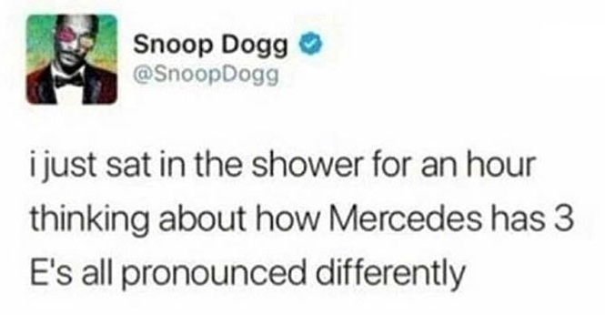
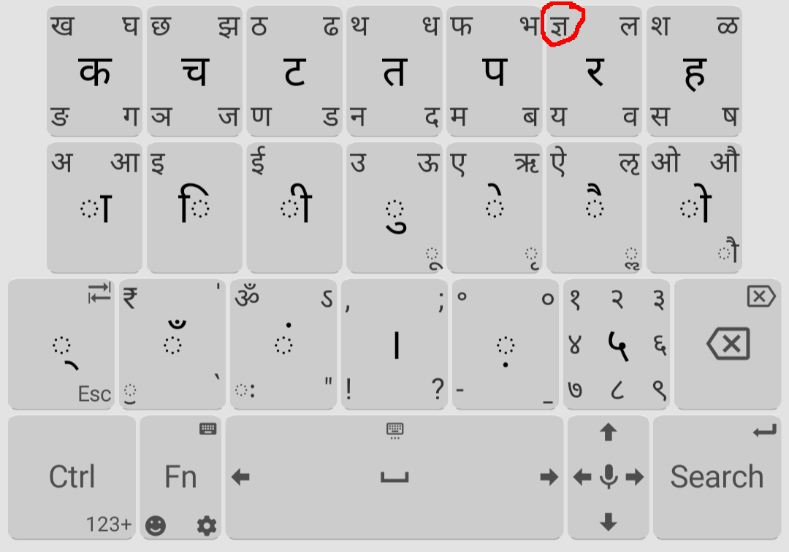

Background
Over a year ago, I started learning Hindi after becoming good friends with this group of Indian boys in college. I wanted to be able to hold a conversation in Hindi, as well as text/type in Hindi.
Hindi uses a different script, namely Devanagari. Although it's possible to write Hindi using the Latin/Roman alphabet (e.g. romanization) I didn't want this. I wanted to be able to type in the real deal which is Devanagari. This meant learning the Devanagari script as well as some new Devanagari keyboard layout on mobile.
I'm only interested in typing on mobile (not desktop, nor handwriting). It's 2023 - only relevant skills!
Learning About Devanagari
Devanagari a phonetic script, meaning:
- each character represents a specific sound
- each sound has a specific character which represents it
By comparison, the Latin/Roman alphabet is not phonetic:
The non-phonetic-ness of English has some interesting consequences:
We have spelling bee's. This is because in English, spelling is non-trivial. In phonetic languages like Hindi, spelling is trivial: you just sound out the word and that is also the spelling.
Q: Do you think they have spelling bee's in India?
A:
Actually they do! (but in English)You can spell English words different ways in Devanagari depending on the accent:
- niche can = नीश (neesh), निछ (nitch)
- mobile can = मोबाईल (moh-bye-ul), मोबल (moh-buhl)
The spelling for certain Hindi words can change as their pronunciation evolves:
| word | formal spelling | colloquial spelling |
|---|---|---|
| why | क्यों (kyo) | क्युं (cue/queue) |
| he/she/it | वह (vaha) | वो (voh) |
Rhyming words have equal suffixes when spelled in Devanagari:
| word | pronunciation in Devanagari |
|---|---|
| four | फोर |
| door | डोर |
| snore | स्नोर |
It's possible to be able to read/pronounce Devanagari out loud without understanding the meaning (by just sounding out the script).
bonus list of weird mistakes I make
| Hindi word | Romanization | my incorrect pronunciation | reason |
|---|---|---|---|
| शब्द (sh-ah-bd) | shubd | शुब्द (sh-oo-bd) | शब्द is stored like 'shubd' in my head, so my brain sees 'shu' and thinks it is pronounced like 'shoe' |
| सिर्फ (s-ee-rf) | sirf | सर्फ (sirf) | In my head, सिर्फ is stored like 'sirf', and my brain sees 'sir' and pronounces it like that (e.g. like सर) |
Conclusion: my brain stores words/sounds in some disorganized way because of English's non-phonetic-ness. It would be so sick to have a phonetic language as your mother tongue becuase then your brain would be much better organized.
The Actual Layout
behold! (Tap or swipe to the corner to type that character)

- on the Google Play Store (I only created this layout then added it to that app. I didn't create the app.)
- More frequent characters are a tap; less frequent characters are a swipe
- It is possible to type all characters in the Devanagari unicode block
Consonants Row
In Devanagari, the consonants are grouped by tongue/lip movements:
source
For example, the "Labial" group's characters are all lip-movements:
- प = p
- फ = f
- ब = b
- म = m

Let's have a key for each consonant group.
Further organization:

- Circled in red above: aspirated consonants
- Circled in blue above: unaspirated consonants
- Circled in yellow above: nasal consonants
- Circled in green above: the consonants which don't follow the pattern

Here, each circled pair of consonants has the same tongue/lip movement.
Vowels Row
In Devanagari, the vowels are grouped by sound:
sourceFor example, the "Rounded high back" group's characters are all "u"-sounds.
Q: What is "diphthong"?
A:
When you change your underwear
Let's have a key for each vowel group. The vowel row also somewhat follows the "standard" vowel order:
अ आ इ ई उ ऊ ऋ ए ऐ ओ औ
It's analogous to the "standard" vowel order in English: AEIOU. Note neither of the "standard" vowel orders follows pitch order (sad).
Further organization:
- Circled in red above: initial vowels
- Circled in blue above: diacritic vowels
Here, each circled pair of vowels has the same sound.
Alternative Layouts
Before creating my layout, I asked my Indian bros which layouts they used. They pretty much had 2 answers:
1. GBoard's Hindi layout

2. SwiftKey's Hindi layout
In hindsight, these are both great options. They both have similar organization. Both these keyboards have auto-complete, whereas Unexpected Keyboard (the app which I added my layout to) doesn't have auto-complete.
If you already know Devanagari and simply want to type fast, auto-complete might be the move.
I briefly considered the Inscript layout, the official Devanagari layout for desktop.

(Google Play Store) If you already know this layout from typing on desktop, this might be the move.
Is My Layout Better? (opinionated)
short answer
Probably not; It is better for me specificallyAs mentioned above, Unexpected Keyboard doesn't have autocomplete/autocorrect. Also, Unexpected Keyboard uses swipe to type characters, whereas for GBoard and Swiftkey you can swipe to type entire words.
To most people, these features are a pro of GBoard/Swiftkey. To me, someone learning Devanagari, I like how my layout forces me to type out words in full from memory. This forces me to learn the spelling (which is also the pronunciation) without the crutch of these features.
In particular, this helped me learn the conjunct consonants. For example for the conjunct consonant त्य:
- With my layout, I'm forced to type the sequence त then ् then य. Here, ् is the
Virama character
and means that there is no vowel sound between त and य.
It also changes how the character looks visually (त्य
looks like the left half of त and then य).
One exception: the ज्ञ character
Its pronunciation is a bit controversial:
ज्ञ = ज + ् + ञ in unicode, so you would think its pronunciation is half of ज, and then ञ, but this is only true in Sanskrit.
In Hindi, ज्ञ is pronounced like ग + ् + ञ (= ग्ञ). Hindi borrows many things from Sanskrit but doesn't always keep everything the same.
For this reason alone, I type it via a single swipe instead of the long way with the Virama character:  - With GBoard, conjunct characters exist on different layers:
although GBoard also does have a key for ् so you can type it out in full if wanted.
I like how my layout has large keys, thus I almost never mis-type.